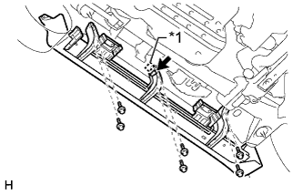
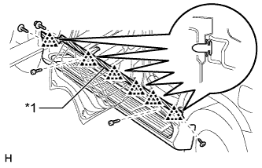
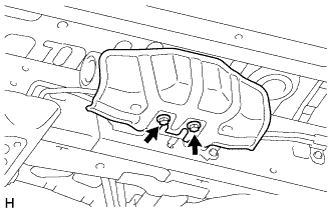
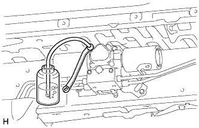
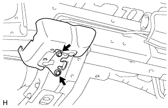
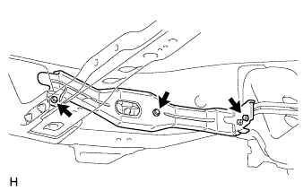
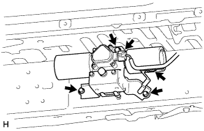

STABILIZER CONTROL VALVE (w/ KDSS) > REMOVAL |
| 1. DISCONNECT CABLE FROM NEGATIVE BATTERY TERMINAL |
| Condition | Waiting Time |
| Vehicle enrolled in G-BOOK system | 6 minutes |
| Vehicle not enrolled in G-BOOK system | 1 minute |
| 2. REMOVE FRONT WHEEL LH |
| 3. REMOVE REAR WHEEL LH |
| 4. REMOVE SIDE STEP ASSEMBLY LH |
|  |
Disconnect the connector and detach the clamp.
| *1 | Clamp |
Remove the 6 bolts.
|  |
Put protective tape around the side step.
| *1 | Protective Tape |
Using a T30 "TORX" socket wrench, remove the 2 screws.
Remove the 3 screws.
Detach the 6 clips and remove the side step.
| 5. REMOVE NO. 1 ENGINE UNDER COVER SUB-ASSEMBLY |
Remove the 4 bolts.
 |
Unhook the No. 1 engine under cover from the vehicle body as shown in the illustration.
| 6. REMOVE STABILIZER CONTROL VALVE PROTECTOR |
|  |
Remove the 2 bolts and stabilizer control valve protector.
| 7. DRAIN SUSPENSION FLUID |
|  |
Loosen the bleeder plug on the stabilizer control with accumulator housing assembly and drain suspension fluid.
Tighten the bleeder plug.
| 8. REMOVE FRONT STABILIZER TUBE PROTECTOR |
|  |
Remove the 2 bolts and front stabilizer tube protector.
| 9. REMOVE FRONT STABILIZER CONTROL TUBE INSULATOR |
|  |
Remove the 3 bolts and front stabilizer control tube insulator.
| 10. REMOVE FRONT STABILIZER CONTROL TUBE |
Using a union nut wrench, disconnect the 4 flare nuts.
Remove the 3 bolts and front stabilizer control tubes.
| 11. REMOVE REAR STABILIZER CONTROL TUBE |
Using a union nut wrench, disconnect the 2 flare nuts.
Remove the 2 union bolts of the rear stabilizer control cylinder and the 2 pressure port gaskets.
Remove the 5 bolts and rear stabilizer control tubes.
| 12. REMOVE STABILIZER CONTROL WITH ACCUMULATOR HOUSING ASSEMBLY |
|  |
Disconnect the connector, and then detach the clamp from the sensor bracket.
Remove the 3 bolts and stabilizer control with accumulator housing.